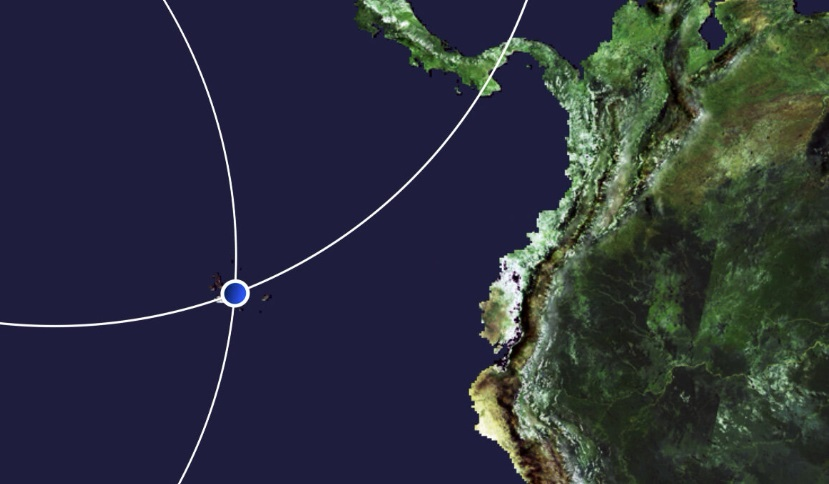

Charles Darwin's Living Laboratory
Galapagos Islands, Ecuador
Schedule: June 3 - July 10, 2024
Useful Links: (
This page is currently under construction
)
To watch the video program "Earth from Space: Galapagos Islands," produced by the European Space Agency, please click the image

Charles Darwin Research Station: Please click
here
.
Galapagos Travel Center - Info - History - Charles Darwin: Please click
here
.
Galapagos Travel Center - Info - Natural & Human History: Please click
here
.
This page is currently under construction
Questions:
This page is currently under construction
Why did Charles Darwin go to the Galapagos Islands for his research? Was it planned, or did he just happen to end up there?
What specific observations did Darwin make in the Galapagos that influenced his theory of evolution?
How did Darwin's observations in the Galapagos contribute to the development of his theory of evolution by natural selection?
Why is the Galapagos Islands important for geological research?
How does the marine environment of the Galapagos support marine biology and oceanography research?
What STEM-related research opportunities exist in the Galapagos Islands?
How do Darwin's discoveries in the Galapagos relate to the broader world? Do they accurately depict nature's truths?